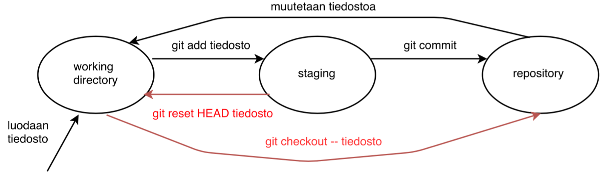
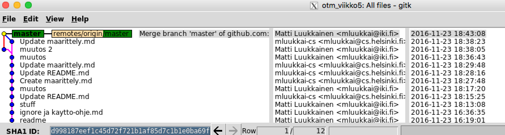

Week 1 assignments
The tasks are to be done either in the workshop or on their own. The deadline for returning assignments is Tuesday, March 19 at 11:59 pm
Assignments are returned using Github and Labtool. More on the return later. Some of the tasks do not appear in the return in any way. Failure to do so will result in a lack of expertise and may cause inconvenience later on.
2 points are available for Weekly Returns. Scoring is assessed based on the quality of the return.
Be sure to push the tasks into GitHub before the weekdeadline. Late Returns will not earn points.
Command line training
Despite the existence of graphical user interfaces, it is still very important in the software industry to control the use of the command line, or terminal.
part 1
Learn to use the "sufficient" command line (see list below). Learning may be easiest by doing the first two parts of the online course at https://www.codecademy.com/learn/learn-the-command-line Navigating the File System and Viewing and Changing the File System (paid pro-episodes are not to be missed).
NOTE. Codecademy requires login with Facebook, Google or GitHub. The course uses GitHub anyway, so that ID should at least exist for everyone to be able to log in.
After this task, you should master the following:
- concepts
- root directory
- home directory
- parent directory
- child directory
- working directory
- .. and *
- and know how to use commands
- pwd
- CD
- ls, ls -a, ls -l, ls -t
- mkdir
- touch
- cp
- rm, rm -r
- mv
You will need command line skills in this course and in your studies anyway.
part 2
Contact ssh connection to linux server melkki.cs.helsinki.fi , melkinpaasi.cs.helsinki.fi or melkinkari.cs.helsinki.fi . On Linux and Mac, the connection is made from the command line with the command ssh username @ server address . Windows and SSH to connect to your successful example putty has .
After logging in to the plant server, perform the following steps:
- create your home directory index courses
- NOTE For some people, there have been problems with home directory settings and eg creating a directory results in a 'permission denied' error. If you encounter a problem, send a message to *it-support@cs.helsinki.fi * and report the problem as "no rights to the home directory in almost"
- also try if logging in to another machine, eg melkinpaasi.cs.helsinki.fi would produce a better result
- create directory courses subdirectory ot2019
- and a subdirectory for the directory you created in week1
- go to your home directory and create it under the directory temp
- go to temp temp
- get at https://raw.githubusercontent.com/mluukkai/ohjelmistotekniikka-kevat2019/master/misc/Unicafe.zip the file with wget program
- wget works by giving it a download file as a parameter
- file applied for is a zip package , extract it to unzip program
- unzip also works by giving it an extractable file as a parameter
- after executing the command, the Unicafe directory appears in the directory
- move the directory to the courses / ot2019 / week1 subdirectory
- delete the zip package
- delete directory temp
- now go to the Unicafe directory in the new location
- run the command mvn clean
- if you see among the lines the message BUILD SUCCESS must be done done
Then go to the * home directory * and enter the command * tree courses *. Copypastea command print recovery, you will need it later.
tab complete
When using the command line, you should definitely get used to using the tab-Complete . Tab is a key that looks something like this

Press Tab to complete the command name or parameter you typed on the command line. For example, if you are going to a directory called Software Engineering-Spring-2019 , all you have to do is type cd ohand press Tab. If there are no other files in your directory or directories starting with oh , the name will be completed. If so, you may need to type a character or two more. If there are several files and you are not sure of the correct name, press Tab several times to see the possible options.
Command names can also be supplemented with a tab-complete. For example, if you want to open the chromium-browser from the command line of a web browser, all you have to do is type chroand press Tab. The command name is completed.
Nor should we forget the up arrow . It allows you to scroll through the commands you have previously written.
simultaneous terminals / terminal tabs
A novice command line user often keeps only one terminal window open at a time. In most situations, your workload will multiply if you open multiple terminals on the screen or open multiple "tabs" on a single terminal. To open a new tab, press ctrl , shift, and t at the same time or from the application menu (located at the top of the screen on Linux on your plant).
version control
Next, let’s take a look at version control.
What is version control? Quote from https://www.atlassian.com/git/tutorials
Version control systems are a category of software tools that help a software team manage changes to source code over time. Version control software keeps track of every modification to the code in a special kind of database. If a mistake is made, Developers can turn back the clock and compare earlier versions of the code to help fix the mistake while Minimizing disruption to all team members.
While the above talks about version control in the context of software teams, you should actually use version control in single-person projects and to manage other types of material than code. For example, all material in this course is deposited in version control.
Today, the most popular version control software is git . Today we will get to know the basics of Git.
NOTE This task must be done on a Linux or Mac with Git installed. The easiest way is probably to do the task on a plant machine. In any case, you should install Git on your own machine. Git can also be installed on Windows.
The beginnings of Git
configurations
Open the terminal on your own machine. So the following tasks are done locally, not almost!
Enter the commands to specify your name and the email address you use for git :
git config --global user.name "Your Name"
git config --global user.email you@example.comUse the command to verify git config -lthat the configurations went correctly.
Let's specify git to use the appropriate colors with the command git config --global color.uiand change the default editor used by Git with the nano commandgit config --global core.editor nano
- if you use gadgets, you can leave the default editor unchanged
Make the following configuration
git config --global push.default matchingThis is related to the default functionality of the git push command. More on the command later.
repositorio
Now make a suitable directory for Git's training and go to the directory, ie give the following commands:
- mkdir ot_viikko1
- cd ot_viikko1
NOTE: now make sure you are in the directory you created, i.e. if you run the ls command , there should be nothing in the directory.
Create a local git repository from the directory by issuing the commandgit init
Git announces that it has initialized the repository:
mluukkai@melkinpaasi:~/ot_viikko1$ git init
Initialised empty Git repository in /home/ad/fshome4/u4/m/mluukkai/Linux/ot_viikko1/.git/If you look at the contents of a directory with the command, ls -layou will notice that a directory has appeared inside the directory .git. Git uses the created directory to keep track of the files stored in the repository.
NOTE because the directory name ( .git ) starts with a dot, the ls command does not display it by default. Parameter a also shows files and directories starting with a dot. Try how ls -a and ls -la differ!
Continue to stay in your repository directory ot_week1 .
Create a directory file named file.txt , eg. Command touch. After creating the file, run the command git status:
mluukkai@melkinpaasi:~/ot_viikko1$ touch tiedosto.txt
mluukkai@melkinpaasi:~/ot_viikko1$ git status
On branch master
No commits yet
Untracked files:
(use "git add ..." to include in what will be committed)
tiedosto.txt
nothing added to commit but untracked files present (use "git add" to track)
mluukkai@melkinpaasi:~/ot_viikko1$Git reports that there is a file that is in untracked mode , meaning the file has not been added to the version control pair.
As the output of the command says, adding a file to Git (... to include in what will be committed) is done with the command git add tiedosto.txt
Perform the addition and then the command git status:
mluukkai@melkinpaasi:~/ot_viikko1$ git add tiedosto.txt
mluukkai@melkinpaasi:~/ot_viikko1$ git status
On branch master
No commits yet
Changes to be committed:
(use "git rm --cached ..." to unstage)
new file: tiedosto.txtGit now says that tiedosto.txt are among the changes that can be commitoida .
commit
Commitment refers to the storage of files and directories and related changes in the git repository .
Commitment is performed by issuing a command git commit -m "tiedosto.txt luotu"
mluukkai@melkinpaasi:~/ot_viikko1$ git commit -m "tiedosto.txt luotu"
[master (root-commit) 0e12cfa] tiedosto.txt luotu
1 file changed, 0 insertions(+), 0 deletions(-)
create mode 100644 tiedosto.txtRun the command again git status
mluukkai@melkinpaasi:~/ot_viikko1$ git status
On branch master
nothing to commit, working directory cleanGit reports that working directory clean , i.e. your directory is in the same state as the git repository.
working directory, index / staging, repository
Be sure to use the tab-complete when doing tasks!
When you make changes to the files (or directories) below your directory, the changes affect the working Directory .
- Make any changes to the file file.txt
- use the nano editor to edit files . The editor starts from the command line with the command nano file.txt
- you can save the file in nano by pressing ctrl and o at the same time
- press ctrl and x to close the editor
- Create a new file in the directory called another.txt
Run again git status
mluukkai@melkinpaasi:~/ot_viikko1$ git status
On branch master
Changes not staged for commit:
(use "git add ..." to update what will be committed)
(use "git checkout -- ..." to discard changes in working directory)
modified: tiedosto.txt
Untracked files:
(use "git add ..." to include in what will be committed)
toinen.txt
no changes added to commit (use "git add" and/or "git commit -a")Git now reports that the new file has been untracked and that there are changes to the previous file that are not staged for commit .
Follow the instructions, ie add the changes and the new file to the list of commitments. You can "add" both files at the same time with the commandgit add .
Let's check the situation again with the command git status
mluukkai@melkinpaasi:~/ot_viikko1$ git status
On branch master
Changes to be committed:
(use "git reset HEAD ..." to unstage)
modified: tiedosto.txt
new file: toinen.txtBoth the change and the new file are now ready to be commissioned.
Commitment is accomplished with the git commit command . As before, the command is given a parameter commit message , a string that describes what changes the new commit will make to the previous one:
git commit -m"muutos ja lisäys"After committing, check the situation again with the git status command .
NOTE If you accidentally execute a commit without a commit message, that is, the -m parameter , open the git text editor and assume that you want to write a commit message to the editor. If you didn't specify nano as the editor for git according to the initial instructions, the default editor vim will open and you may need to google how to get out of the editor.
Thus, the files and the changes made to them can be in three different states with respect to Git .
- Initially, the files (or changes made to them) are only in the working Directory and are not listed by git until they are added with the command
git add - The files are then ready to commit. According to Git's terminology, files ready to be committed are in the staging area
- The command
git committransfers the changes in staging to the repository, ie creates a new commit
The following image illustrates how to change the state of a file by performing git commands.

When the file is created, it goes to Git's working Directory . The git add command moves the file to the staging area, ie ready for committing. The file in the staging is exported (i.e. "committed") to the repository with the git commit command . When the committed file is edited again, the changes go back to the working Directory .
git commit
Thus, each execution of the git commit command creates a new commit, i.e. a new "state", in the repository. With this command git logit is possible to see which commits the repository contains:
mluukkai@melkinpaasi:~/ot_viikko1$ git log
commit 6aff75ab51d14d7cb9a72867ba13d9782d06c7ff (HEAD -> master)
Author: Matti Luukkainen
Date: Sun Oct 7 19:33:32 2018 +0300
muutos ja lisäys
commit 9e6a83d058c9564e8a390f8766845d45b365f360
Author: Matti Luukkainen
Date: Sun Oct 7 19:32:12 2018 +0300
tiedosto.txt luotu
mluukkai@melkinpaasi:~/ot_viikko1$The Git log tells you the time, author, message, and tag of each commit . Tags are used if, for example, there is a need to return to an old commit state.
Use the arrow keys to scroll through the log. To exit the git log , press q .
more practice
Be sure to use the git status command as often as possible. Also, don’t forget the tab-complete!
- Create the file third.txt
- Add it to commit and commito
- Change the contents of the second.txt and third.txt files and commito the changes
- Create a directory of stuff and a file inside it
- Add changes to commit and commit
- Note that adding a directory is enough, the files it contains will be added automatically
- See what the git log looks like
gitk
Git commits can also be viewed with the graphical gitk command (the corresponding tool for OSX and Windows is Sourcetree ). Run the command in the repository:

In the upper left corner you will see all the commitments. The latest situation at the top. The name of the latest commit is master . By clicking commit, you will see information related to the commit in other windows. In the lower right corner, you will see the files that have changed in the commit (if the selection is a patch ) or the files that existed in the repository during the commit (if the selection is a tree ). In the lower left corner, you can view the changes that the commit made to the files or the status of the files during the commit. Options are a bit confusing because they operate in different ways depending on the mode from the right side.
Similar view when viewing with OSX Sourcetree :

When you do the next task, it's a good idea to open a new tab in the terminal so you can keep gitk running.
- Copy the file file.txt any amount of text and file commitoi
- Now delete some of the text in the file and add a little more text to the file
- commitoi after the changes
- Update the gitk view (file / update) and see how the changes appear (look at the top two commits)
- select patch in the lower right corner and diff in the left
- this is how you see the changes caused by the commit in diff format
- if tree is selected on the right, the status at the time of the file commit is displayed on the left (regardless of the selection)
- If you use sourcetree, it should update automatically and show the change in diff format
file deletion and renaming
- Delete the file another.txt
- run git status
- commitoi change
- first delete the file from under Git with the command git rm
- use the git status command to make sure everything is as it should be
- change the file file.txt name eka.txt
- renaming is done with the command mv
- run git status
- how does git handle renaming?
- commitoi change
git add -p
- Make some changes to the files eka.txt and third.txt
- make both additions and deletions
- add them to commit with the git add -p command
- git now displays every change you make in patch format and asks you to make sure the change is added as commutative
- press y and enter to accept
- commitoi changes
- always make changes to files committed by using the git add -p command , so you can check that the changes are exactly what you expect to be adding
- Note that completely new files will not be commuted with the git add -p command
revocation of changes
Sometimes changes need to be made to the files that need to be undone
- now make some changes to the file eka.txt , do not add the file to commit
- run the command git status
mluukkai@melkinpaasi:~/ot_viikko1$ git status
On branch master
Changes not staged for commit:
(use "git add <file>..." to update what will be committed)
(use "git checkout -- <file>..." to discard changes in working directory)
modified: eka.txt
no changes added to commit (use "git add" and/or "git commit -a")As assumed, git tells you that we have made changes that are not "staged for commit", i.e. added to commit.
- It is decided to undo the changes. It succeeds with the command
git checkout -- eka.txt - When you run the git status command again , you will notice that the working directory no longer contains any changes:
mluukkai@melkinpaasi:~/ot_viikko1$ git checkout -- eka.txt
mluukkai@melkinpaasi:~/ot_viikko1$ git status
On branch master
nothing to commit, working directory clean- Also, make sure that the contents of the file are the same as before the changes
A change that has been exported to staging, ie that is ready to be commissioned, can also be undone.
- Make changes to the third.txt file and add it for commissioning. However, do n't commit.
- git status should look like this
mluukkai@melkinpaasi:~/ot_viikko1$ git status
On branch master
Changes to be committed:
(use "git reset HEAD <file>..." to unstage)
modified: kolmas.txt
mluukkai@melkinpaasi:~/ot_viikko1$Instructions for canceling the change can be found in the git status printout.
- make changes to the undo command
git reset HEAD kolmas.txt - considered again git status
mluukkai@melkinpaasi:~/ot_viikko1$ git status
On branch master
Changes not staged for commit:
(use "git add <file>..." to update what will be committed)
(use "git checkout -- <file>..." to discard changes in working directory)
modified: kolmas.txt
no changes added to commit (use "git add" and/or "git commit -a")So the file is no longer in staged mode, but the changes are in the working Directory , so if you look at the contents of the file, the changes still exist
- you can cancel the changes completely by issuing the command
git checkout -- kolmas.txt - make sure the file has returned to its pre-change state
In the following, the diagram describing the state of the file is completed, ie if the file has been added for committation, i.e. it is staged , the change can be canceled with the command git reset HEAD . In this case, however, the changes still remain in the file, ie they are in the Working Directory . The file can be restored to the state of the previous commit in the repository with the git Checkout command .

training
- creates reposition inside the directory files and the files inside the directory file1 , file2 , and file3
- commitoi changes
- remember how you can add the contents of an entire directory to commute with a single command
- change the contents of file1 and delete file2
- cancel changes!
- change the contents of file3 , add to commit
- cancel changes!
- delete file file1 and rename file file2 to file file22
- committoi
In the repository, run the command git log --stat | cat and retrieve the result of the command , you will need it later!
GitHub
Of course, using Git is useful in the way we are already training, that is, by creating a repository from the directory of the local machine. However, we will be able to enjoy an order of magnitude greater benefits by connecting our repository to a remote repository on the Internet . Through the remote repository, repository files can be easily shared between multiple machines and / or multiple users.
The leading place on the Internet for storing remote repositories is GitHub
Before deploying GitHub, create a new git repository for the local machine, the following assumes that the directory name is ot-practice .
NOTE: Do not create a new repository inside a training repository you have previously created!
For example, the following commands move to the home directory, create an ot-exercise directory under it , move to the directory, initialize it as a git repository, and add and commute one file to the repository:
cd
mkdir ot-harjoitustyo
cd ot-harjoitustyo
git init
touch README.md
git add .
git commit -m"initial commit"Then let's move on to GitHub
- Create an account for yourself on GitHub (if you don't already have one)
- Create a new repository
- the function for creating a new repository can be found below the plus symbol in the upper left corner
- Do not put the tick to Initialize this repository with a README

- press the green Create repository button to create a repository
Next, we want to connect the repository created in GitHub to the ot-practice of the newly created local machine repository as a remote repository.
- to add a remote repository, follow the instructions in the view that opens in GitHub
- make sure SSH is selected in "Quick setup ..."

- copy the top line from ... or push an existing repository from the command line
- in my own example, the line is
git remote add origin git@github.com:mluukkai/ot-harjoitustyo.git- paste a line on the command line and press enter to execute the command
- run the command git remote -v
- the printout indicates that the github remote repository is linked to your local repository as origin
mluukkai@melkki:~/ot-harjoitustyo$ git remote -v
origin git@github.com:mluukkai/ot-harjoitustyo.git (fetch)
origin git@github.com:mluukkai/ot-harjoitustyo.git (push)- origin is the default name for the remote repository. The name can be anything and there can be multiple remote repositories
- we can move the status of our local repository to the remote repository with the command git push
- you may need to do the first push in a longer format --set-upstream origin master
- tested
mluukkai@melkki:~/ot-harjoitustyo$ git push --set-upstream origin master
Warning: Permanently added the RSA host key for IP address '192.30.253.112' to the list of known hosts.
Permission denied (publickey).
fatal: Could not read from remote repository.
Please make sure you have the correct access rights
and the repository exists.Public key
If you have already set a public key in eg Database Basics, pushing should work and you can move on to the next step .
Pushaus does not work. Now the point is that git would like to perform public key authentication. However, it doesn’t work because we haven’t told git about our public encryption key.
- create an encryption key by issuing the command ssh-keygen from the command line
- you can answer all questions with enter
- two encryption keys are generated, secret and public. They will be placed in the .ssh directory below your home directory
- go to the directory and view the contents of the directory
- the file id_rsa.pub contains a public key, it is to be copied to github for a key-based login
- you can see the contents of the file with the command cat id_rsa.pub
- enter ssh-add from the command line
- go to the GitHub settings page by clicking on the icon in the upper right corner and selecting settings
- select SSH and GPG keys from the settings
- create a new SSH key
- give the key some title (eg department) and copy the contents of the file id_rsa.pub to the key
- Run push again:
mluukkai@melkki:~/ot-harjoitustyo$ git push
Counting objects: 3, done.
Writing objects: 100% (3/3), 213 bytes | 106.00 KiB/s, done.
Total 3 (delta 0), reused 0 (delta 0)
remote:
remote: Create a pull request for 'master' on GitHub by visiting:
remote: https://github.com/mluukkai/ot-harjoitustyo/pull/new/master
remote:
To github.com:mluukkai/ot-harjoitustyo.git
* [new branch] master -> master
Branch master set up to track remote branch master from origin.- now everything seems to work
More files
- make a directory calculator inside the newly created repository
- and inside the index week1
- At the end of the command line task was a prompt: Then go to the home directory and enter the command tree courses. Copypastea command print recovery, you will need it later
- Make a directory of the exercise sessions / viikko1 inside the file komentorivi.txt and copy there the command tree earnings
- At the end of the previous set of tasks, you were prompted to save the git log --stat command issued in the training repository. cat result
- Make a file gitlog.txt inside the directory calculators / week1 and copy the result of the gith training there
- Write some text in the README.md file at the base of the directory
- format the text using markdown notation
- make a title for the file, for example, plain text that contains bold and italicized sections
- we will soon see the text formatted on the screen
- commitoi changes
- always remember to add the file / changes to commit when committing
- push the code to github with the command git push
Files on GitHub
- go to your GitHub repository page
- in practice, this is done by reloading the page that opened after the repository was created
- you will notice that the files will now appear on the repository page. The page renders the contents of the README.md at the base of the repository in markdown format
- you can edit the files in the repository directly with the GitHub editor by going to the file page and pressing the stylus
- make links to README.md to the files command line.txt and gitlog.txt in the counters / week1 / directory of the repository
- instructions for creating a link can be found here
- you can get the url of the files by navigating to the file in GitHub and copying the address from the address bar of your browser
- Your repository should look something like this

- if you did everything right, you can access the links in README.md by clicking on the contents of the linked files
Updating the local repository
- The changes we made in GitHub have made a new commit to the remote repository
- The remote repository is now ahead of our local repository
- We can import the changes to the local machine with the command git pull
- Try the command and make sure the changed content is now in the local repository
More githubia
- Make a change to the README.md file on the local machine, for example
- Add and commit change
- Export the changes to GitHub with the git push command
- Make sure the changes are reflected in GitHub
- Your local repository and GitHub's remote repository are in the same state again.
Asynchronous local and remote repository
- sometimes it happens that the local and remote repositories go asynchronously, so that a new commit is made to both at the same time
- creating such a situation
- make a change to README.md in the local repository , add and commit the change
- don’t push change to GitHub
- make a change to GitHub somewhere other than the README.md file
- so, for example, edit the file gitlog.txt a bit directly in GitHub
- now try to push the changes in the local repository to github
- resulting in an error message
mluukkai@melkki:~/ot-harjoitustyo$ git push
To git@github.com:mluukkai/ot-harjoitustyo.git
! [rejected] master -> master (fetch first)
error: failed to push some refs to 'git@github.com:mluukkai/ot-harjoitustyo.git'
hint: Updates were rejected because the remote contains work that you do
hint: not have locally. This is usually caused by another repository pushing
hint: to the same ref. You may want to first integrate the remote changes
hint: (e.g., 'git pull ...') before pushing again.
hint: See the 'Note about fast-forwards' in 'git push --help' for details.
mluukkai@melkki:~/ot-harjoitustyo$- You will probably come across this many times in the future as well.
- The problem is not bad. Because local and GitHub changes have affected different files , we can handle it easily
- first we roll the changes to the local repository with the command git pull
- bulging gives rise to the so-called. merge commit, for which we have to define a commit message in the editor that opens
- the default message will work, which is enough to exit the editor and save the changes
- and we push them again into the github
- now the local and remote repository are in sync again
- see the repository status now with the gitk command
- you can see that the repository's latest commit now has two predecessors, the local commit and the remote repository's commit

If the changes had applied to the same file, a slightly more serious situation would have arisen, i.e. a merge conflict . Conflicts must be resolved using the editor itself. There are, of course, tools, mergetools, to help resolve the conflict. However, we are not going on merge conflicts on this course.
As a rule of thumb, it is always a good idea to bounce all changes from the remote repository first when you start working in a local repository. And when you finish working, push the changes to the remote repository. In this way, conflicts are not likely to arise in the work of one person.
Labtool
Now register your own data and the repository you created in Labtool . Choose Software Engineering as the course if you have to make a choice.
Labtool will also ask about the topic of the assignment, if you are not sure about your topic yet you can change the name of the topic later.
More gits
The basic use of Git will definitely become familiar during the course. Of course, it is worth continuing to study the more advanced features of Git on your own. There are a large number of more or less good tutorials on the Internet. Here are a few links
- https://www.atlassian.com/git/tutorials/
- http://learngitbranching.js.org
- http://ohshitgit.com
- Week 1 assignments
- Command line training
- part 1
- part 2
- tab complete
- simultaneous terminals / terminal tabs
- version control
- The beginnings of Git
- git commit
- more practice
- gitk
- file deletion and renaming
- git add -p
- revocation of changes
- training
- GitHub
- Public key
- More files
- Files on GitHub
- Updating the local repository
- More githubia
- Asynchronous local and remote repository
- Labtool
- More gits